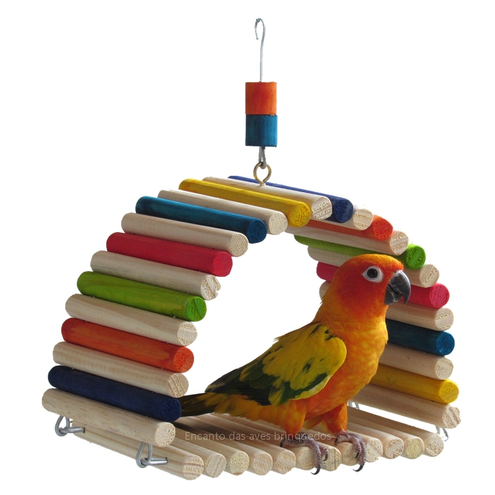

Toca de Madeira em Arco
Valor: R$ 39,99
Toca em arco para aves de pequeno e médio porte, feito com madeira de reflorestamento, multicolor.
Aves&Pet é um lugar onde você pode realmente se sentir a vontade e seguro para comprar produtos de qualidade para sua ave.
Temos vários tipos de rações, gaiolas e brinquedos disponíveis, aproveite!
Valor: R$ 39,99
Toca em arco para aves de pequeno e médio porte, feito com madeira de reflorestamento, multicolor.

Valor: R$ 34,99
Poleiro tipo arco e giratório para aves de pequeno porte, feito com madeira de reflorestamento, multicolor.
Valor: R$ 74,99
Poleiro para aves de grande porte, feito com madeira de reflorestamento, multicolor.
Valor: R$ 89,99
Roda com pêndulo mordedor para aves de médio porte, feito com madeira de reflorestamento, multicolor.
Valor: R$ 11,99
Mistura de sementes, Reino das Aves, alimento completo e balanceado.

Valor: R$ 14,99
Mistura de sementes, Reino das Aves, alimento completo e balanceado.
Valor: R$ 12,99
Mistura de farinha, Reino das Aves, alimento completo e balanceado.
Valor: R$ 14,99
Mistura de sementes, Reino das Aves, alimento completo e balanceado.

Valor: R$ 49,99
Kit de comedouro e bebedouro em alumínio, 3 peças, contém aro de fixar em gaiolas ou viveiros.
Para aves de médio e grande porte.
Valor: R$ 19,99
Bebedouro/comedouro em plástico para aves de pequeno e médio porte.
Cores variadas.
Valor: R$ 149,99
Gaiola para aves de pequeno, médio e grande porte.
Tipo: Casinha com duas janelas com poleiro.
Cor: Vermelho
Valor: R$ 79,99
Gaiola para aves de pequeno e médio porte.
Acompanha 2 (dois) comedouros/bebedouros.